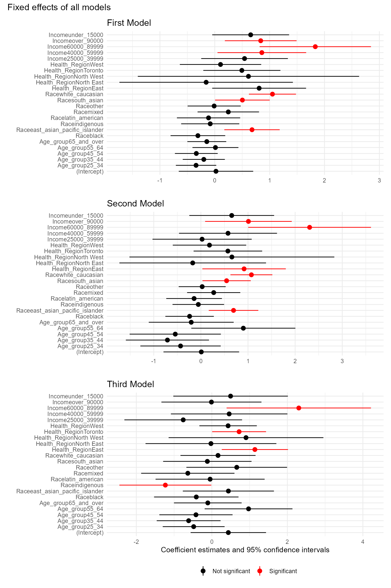
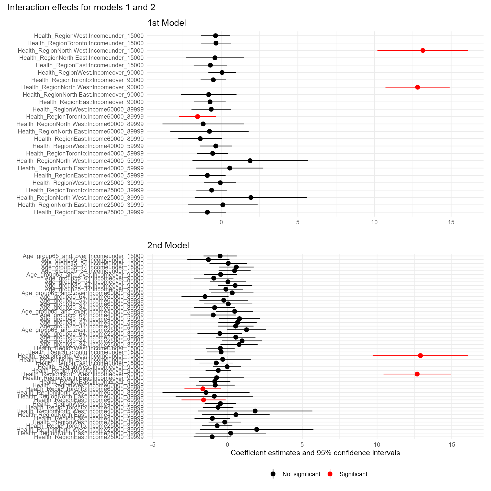
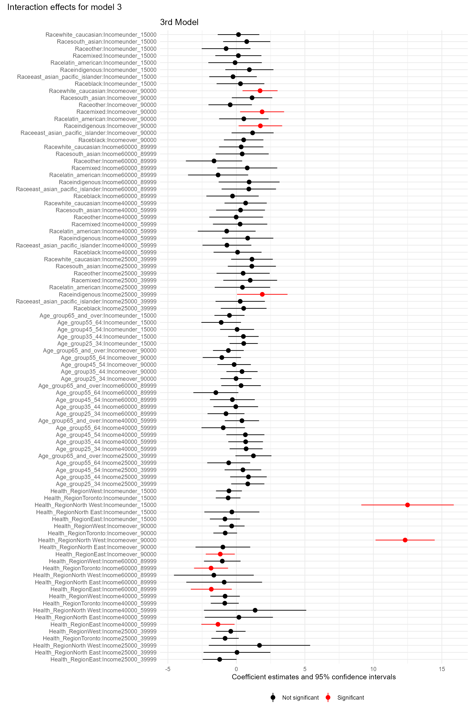

Covid-19 Fields Survey Data Protocol
![]()
Background
The COVID-19 pandemic continues around the world with more than 600 million confirmed cases as of November of 20221. During the first months of the pandemic in early 2020, non-pharmaceutical interventions (e.g., masking, social distancing) were the only methods available to manage the spread of the disease, but the rapid development of vaccines against the virus permitted their approval and use in some countries towards the last month part of 2020. For example, in the US and Canada vaccine campaigns began in mid-December of 20202,3. Although it has been estimated that vaccines against COVID-19 have prevented around 14 millions of deaths worldwide4, the rollout of COVID-19 vaccines has faced multiple challenges since its inception.
In this regard, vaccination efforts have faced multiple: Inequalities with regard to vaccine access due to socio-economic factors, vaccine hesitancy, and differences in vaccination rates across different segments of the population are among the challenges identified in the administration of COVID-19 vaccines5–7. In the case of Canada, lower vaccine uptake has been associated with socio-economic factors such as younger age, educational level, presence of children in the household, lack of a regular healthcare provider, ethnic origin, and financial instability8–10.
Additionally, it has been shown that geography also plays a crucial role in vaccination rates, as they vary due to spatial differences in attitudes towards vaccination7, geographical differences in vaccine access and supply, vaccination location availability, and lack of prioritization of vulnerable groups3,11.
Studies that analyze geographical variations in vaccine uptake can help inform public health decision-makers to design policies to that are aimed at addressing vaccination disparities. In this regard, previous geographical (spatial) analyses of vaccination rates have shown that variations in vaccine uptake can occur within small governmental administrative units (e.g., counties in the case of the US)12–15, and that geographical analyses can be predictive of booster uptake patterns16.
In Canada, studies that have used a spatial approach to analyze vaccine uptake have shown disparities in vaccination rates across low and high income neighborhoods in the city of Toronto17, among adolescents from deprived neighborhoods in the city of Montreal18, and highlighted disparities in vaccination status depending on age, income, and ethnic origin in all of the Canadian provinces8. However, to the best of our knowledge, there are no studies that have analyzed vaccination status within a province to identify inequalities that may exist within these geographical areas. A dissagregated view of variability within a province can help understand the barriers for vaccine delivery in the case of visible minorities, which have been disproportionately impacted in the pandemic19.
Research Question
This study will examine self-reported COVID-19 vaccination status within the province of Ontario in order to determine how socio-economic (e.g., ethnic origin, age, income) and geographical factors (at level of the Health Regions of Ontario) influence vaccination within the province.
Methods
Data source: survey overview
We obtained data from the Fields Institute for Research in Mathematical Sciences’ (henceforth Fields) Survey of COVID-19 related Behaviours and Attitudes, a repeated cross sectional survey focused on the Canadian province of Ontario which ran from Sept 30, 2021 until January 17, 2022. This survey was commissioned by Fields and the Mathematical Modelling of COVID-19 Task Force, under the supervision of Dr. Kumar Murty, the Director of Fields with funding from the Canadian Institutes of Health Research. The survey was conducted by a third-party service provider (RIWI Corp.), under ethical guidance from University of Toronto.
The survey was deployed using random domain intercept technology. Briefly, when web users clicked on a registered but commercially inactive web link or typed in a web address for a site that was dormant, they had a random chance of that link being temporarily managed by the company that administered the survey (RIWI Corp). Thus, instead of coming across a notification about the status of the site(“this page does not exist”), the survey was deployed to the user. Web users then decided whether to anonymously participate, exiting the survey at any time if desired20.
Respondents who wished to participate were asked to select their age from a matrix of values, and subsequent questions were displayed one at a time, after the respondent confirmed their selection by answering and selecting “next”. Those who do not wished to participate were asked to either close the browser window or navigate away from the domain. After the survey closed (complete or incomplete) no one from that internet protocol (IP) address could access the survey again and the domain entry point rotated such that if a respondent were to attempt to access the survey again, share the link, or enter via the same address using an alternative IP address, the survey would not render.
Additionally, respondents who indicated they were under the age of 16 were exited from the survey. No record was created in this case and due to domain cycling these users were unable to navigate back to the “age select” screen. The personal identifier information from each respondent was automatically scrubbed and replaced by a unique ID. Respondents were drawn exclusively from the province of Ontario, as per their devices meta-data.
Survey responses
Socio-demographic factors
From the different answers provided by the survey respondents, we selected the age group which they belonged to, income bracket, race/ethnicity, and employment status. The original survey included additional questions (e.g., sick leave, remote work, presence of minors in the household) but the survey design, which permitted respondents to exit the survey at any point resulted in a high rates of missing data for most of these answers. The socio-economic factors chosen for this study were the ones that had both the lowest rates of missingness and that provided an adequate level socio-economic and demographic information for our analysis. Information about the chosen socio-economic factors from the survey is provided in Table 1.
| Variable | Values |
|---|---|
| Age group | 15-24,25-34,35-44,45-54,55-64, 65+ |
| Income bracket (CAD) | <15,000, 15,000-24,999, 25,000-39,999, 40,000-59,999, 60,000-89,999, >90,000 |
| Race/ethnicity | Arab/Middle Eastern, Black, East Asian/Pacific Islander, Indigenous, Latin American, Mixed, South Asian, White Caucasian, other |
Vaccination status
From the survey, we selected the question regarding vaccination status:
- “Have you received the first dose of the COVID vaccine?”, with possible answers “yes” and “no”
Data cleaning
The original dataset contained 39,029 entries (where each entry corresponded to a set of answers provided by a unique respondent). Following a preliminary analysis to identify the missing rates across the different answers within each entry, it was identified that many of the answers had high missing rates (>80%) (note that the graph will be in the Appendix). Therefore, the dataset was cleaned in order to contain only the independent variables of interest with the lowest missing rates (Table 1) and the dependent variable. The final clean dataset contained 3,709 unique entries.
The cleaning process also included removing outliers that were identified during the preliminary analyses. Specifically, we removed those respondents that indicated to be below 25 years of age, living in a household of size 1, and that reported an income above CAD 110,000. After cleaning the dataset contained 5,247 entries (unique respondents).
Geographical location
For each survey participant certain data was automatically captured. This included the nearest municipality, which resulted in a total of 578 different municipalities within the dataset. Because our interest was to analyze the differences between Health Regions, we assigned the location (city) of each entry to its correspondent Health Region following a multi-step process: First, we used the municipality information from the website of the Association of Municipalities of Ontario (AMO) to assign geographical regions to each entry on the dataset. Secondly, we used a publicly available dataset of long-term care homes by Local Health Integrated Network (LHIN), which were the geographical divisions for health in Ontario before the adoption of the Health Regions, to match each city with its corresponding LHIN. Cities that did not have a LHIN entry on the dataset were searched in the websites of the LHINs and manually added to the dataset. Finally, we assigned the corresponding Health Regio to each city by matching the LHINs to the Health Regions that now encompass them, following the information provided by Ontario Health (details of the complete process are in the Appendix).
Corrections
We identified differences between the proportions of various socio-economic factors the survey respondents when compared to the 2016 Census data for Ontario. These factors included age groups, income, and ethnicity/race identified. Additionally, because the Census divisions do not match the exact boundaries of the Census, we also obtained population estimates for each Health Region from the Ontario Health website in order to correct for the population within each Health Region. We corrected for all of these factors (age group, race/ethnicity, income, Health Region Population) using an iterative proportional fitting procedure (also known as raking)21 in R using the survey package. The proportions of each of these factors and the data from the 2016 Census Data for Ontario used for the corrections can be found in the Appendix. Of notice, because the categories provided by the survey in some cases (e.g., race/ethnicity categories) did not match the categories from the Census, we aggregated them where appropriate to obtain an approximation to the categories in the Census.
Statistical models
Because of the binary outcome of the survey answer of our interest (vaccination status as “yes” or “no”) we used a fixed-effects logistic regression to estimate the probability of vaccination depending on the socio-economic factors described in Section 3.2.1 and the Health Regions from Section 3.3.1. Previous studies have shown that socio-economic factors, and their interactions are significant predictors of intent of vaccination and vaccination status22–24. At the same time in the case of Canada, others have indicated an ongoing need of socio-economic information that can provide a rationale for the disparities in vaccination observed within some racial groups25.
Therefore, we built different logistic regression models that accounted for different levels of interaction between the available socio-economic factors obtained from the Fields Covid survey. The different models are described below.
Model building and selection
The first model (model1) examined the interaction of income and Health Region as it has been shown that there has been an increase in income inequality within the provinces of Canada over time26, and the relatively recent implementation of the Health Regions motivated us to explore if income disparity may be an important factor to consider within each of the Health Regions.
The the model was fitted using the function svyglm from the survey R package in order to incorporate the correction in sampling probability obtained from raking. The model appears in Equation 1.
\[ \begin{aligned} \log \left( \frac{p\textrm{(vac)}}{1-p\textrm{(vac)}} \right) = \beta_0+ \beta_{1}\textrm{(Age group)} +\beta_{2} \textrm{ Race} +\\ \beta_3 \textrm{ Health Region} + \beta_4 \textrm{ Income} + \beta_5\textrm{(Health Region} \times \textrm{Income)} \end{aligned} \tag{1}\]
Where \(p\textrm{(vac)}\) indicates the probability of having received the first dose of a Covid-19 vaccine.
The second model (model2) incorporated an interaction effect between age group and income to examine if a significant interaction occured between these factors as well. The model appears in Equation 2.
\[ \begin{aligned} \log \left( \frac{p\textrm{(vac)}}{1-p\textrm{(vac)}} \right) = \beta_0+ \beta_{1}\textrm{(Age group)} +\beta_{2} \textrm{ Race} + \beta_3 \textrm{ Health Region} + \\\beta_4 \textrm{ Income}+ \beta_5\textrm{(Health Region} \times \textrm{Income)} + \beta_6 \textrm{ (Age group} \times \textrm{Income)} \end{aligned} \tag{2}\]
A third model (model3) incorporated an interaction effect between race and income, and appears in Equation 3.
\[ \begin{aligned} \log \left( \frac{p\textrm{(vac)}}{1-p\textrm{(vac)}} \right) = \beta_0+ \beta_{1}\textrm{(Age group)} +\beta_{2} \textrm{ Race} + \beta_3 \textrm{ Health Region} + \beta_4 \textrm{ Income}+\\ \beta_5\textrm{(Health Region} \times \textrm{Income)} + \beta_6 \textrm{ (Age group} \times \textrm{Income)} + \beta_7 \textrm{ (Race} \times \textrm{Income)} \end{aligned} \tag{3}\]
Although it could have been interesting to examine the interaction of Health Region and Race, or 3-way interactions between socio-economic factors (e.g., age,income,race), these models had singularity issues. Next, we compared the AIC of the three models indicated above. The AICs are very similar and appear in Table 2.
| AIC | model |
|---|---|
| 3580.878 | model1 |
| 3614.465 | model2 |
| 3633.575 | model3 |
Results
Descriptive statistics of the Fields Covid-19 Survey
Table 3 shows the descriptive statistics (uncorrected) from the Fields Covid-19 survey data for vaccination status and each of the covariates analyzed.
Variable | no, N = 1,0001 | yes, N = 2,7091 |
|---|---|---|
Income | ||
15000_24999 | 167 (34%) | 326 (66%) |
25000_39999 | 144 (31%) | 316 (69%) |
40000_59999 | 116 (25%) | 348 (75%) |
60000_89999 | 71 (17%) | 343 (83%) |
over_90000 | 251 (25%) | 752 (75%) |
under_15000 | 251 (29%) | 624 (71%) |
Age_group | ||
16_24 | 230 (27%) | 634 (73%) |
25_34 | 193 (27%) | 518 (73%) |
35_44 | 136 (25%) | 400 (75%) |
45_54 | 130 (28%) | 335 (72%) |
55_64 | 80 (20%) | 317 (80%) |
65_and_over | 231 (31%) | 505 (69%) |
Health_Region | ||
Central | 224 (28%) | 581 (72%) |
East | 135 (23%) | 448 (77%) |
North East | 36 (34%) | 71 (66%) |
North West | 6 (12%) | 45 (88%) |
Toronto | 371 (28%) | 953 (72%) |
West | 228 (27%) | 611 (73%) |
Race | ||
arab_middle_eastern | 77 (35%) | 141 (65%) |
black | 120 (39%) | 186 (61%) |
east_asian_pacific_islander | 72 (23%) | 236 (77%) |
indigenous | 82 (38%) | 134 (62%) |
latin_american | 70 (38%) | 112 (62%) |
mixed | 111 (34%) | 213 (66%) |
other | 134 (34%) | 255 (66%) |
south_asian | 89 (23%) | 294 (77%) |
white_caucasian | 245 (18%) | 1,138 (82%) |
1n (%) | ||
Model Comparisons
The output from the three models is too long to give a summarized view. I am still trying to get the important parts out but in the meantime here are the summary findings:
Model 1 Significant values on:
Age: None
Race: East Asian/Pacific Islander, South Asian, White Caucasian
Income: 60000-89000 CAD, Over 90000
Interaction of Income and Health Region: Toronto and 60000-899999, North West and over_90000, North West and under_15000
Model 2 Significant values on:
Age: None
Race: East Asian/Pacific Islander, South Asian, White Caucasian
Health Region: East
Income: 60000-89000 CAD, Over 90000
Interaction of Income and Health Region: East and 60000_89999, Toronto and 60000-899999, North West and over_90000, North West and under_15000
Interaction of Age and income: A couple of low values, but none below 0.05
including here the results of the third model, which I believe is the most appropriate as it has a similar AIC to the other ones, and it is able to provide interaction information on three different instances.
- Model 3 Significant values on:
- Age: None
- Race: Indigenous
- Health Region: East, Toronto
- Income: 60000-89000 CAD
- Interaction of Income and Health Region: East and 40000_59999, East and 60000_89999, Toronto and 60000-899999, East and over_90000, North West and over_90000, North West and under_15000
- Interaction of Age and income: A couple of low values, but none below 0.05
- Interaction of Race and Income: indigenous and 25000_39999, indigenous and over_90000, mixed and over_90000, white_caucasian and over_90000. A visual representation of the estimates of the models can be see below, where Figure 1 shows the odds-ratio, 95% confidence interval for the single fixed effects of the three models. Figure 2 shows the odds ratio and 95% confidence interval for the interaction effects of models 1 and 2, and Figure 3 shows the interaction effects for model 3.



So far, considering that the interaction of socioeconomic factors are important predictors of vaccination status, I believe the model that provides a more cohesive picture of the data is model 3 as it shows differences between race and income which could be important if we consider the types of occupations that people in certain regions do, and how these influences their vaccination status.